Overview 📎
For this project, we explored the YCombinator website and searched for startups in the Education sector, where we found Miyagi
Labs. Scroll down to see our Style Guide, Wireframing, and Hi-Fi prototypes! This time, our challenge was to create an
interactive Figma Prototype based solely on the description of the startup without any reference to the current website.
Please click through our Final Figma Prototype below:
Sketching and Wireframingᝰ
Our design process began with low-fidelity sketches and wireframes to define core functionality and user flow. These early
iterations helped us focus on structure over styling, identifying the primary components needed on each screen—such as
navigation, project cards, and content sections. We were guided by user-centered design principles, prioritizing clarity,
hierarchy, and ease of navigation. For instance, the layout features clear divisions, mimicking common patterns users are
already familiar with, which improves usability and intuitiveness. We drew inspiration from modern, minimalistic portfolio
layouts and peer feedback with content-focused designs.
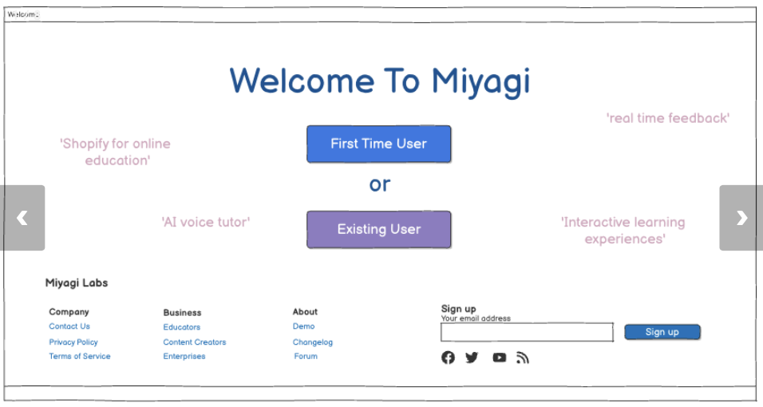
Some objective decisions we made overall included:
- A Consistent Color Palette — Orange + beige tones promote visual identity and emotional warmth.
- Clear Typography Hierarchy — Primary bold headers and secondary fonts are used consistently for readability and emphasis.
- Component Reusability — Buttons, cards, and headers follow a style guide, enabling scalable design across the app.
- Clear Generate Course Instructions — Positioned at the center with strong contrast, guiding users to the app’s main action.
- A Popular Courses Carousel — Gives users a quick preview of content; encourages exploration and boosts engagement.
- Minimal Top Navigation — Focuses attention on central interaction instead of distracting options.
- Structured Content Hierarchy — Example: In the course page, Overview → Lessons → Knowledge Check flow makes it cognitively easy to process.
- Progress Tracking with Visual Feedback — Roadmap/tracker map lets users understand where they are and what comes next (based on wireframes).
- Use of Color for Feedback — Orange indicates interactive/important actions; Green signals success/helpful info, keeping visual language consistent.
- Category Segmentation — Courses divided into K-12, College, and Other helps users find what they need faster.
- Visual Folder System — The My Notes page mimics a real-world filing system, making it intuitive for users.
Critique 🔎
After creating our wireframes, we took part in a critique session which led to considerable design changes and the creation of our style guide to improve clarity, usability, and consistency across the site. Please see the finalized style guide in the next section.
💡 What Changed and Why?
- Cleaned up visual hierarchy → Consistent spacing, padding, and screen widths.
- Reconsidered pages displayed → Removed non-essential pages (e.g., Progress Report, About Us) and developed more essential pages (e.g., active course page).
- Created a coordinated color palette → Consistent coloring across whole site.
- Added a clickable logo for homepage return → Improves navigation and user flow.
- Refined design details → Redesigned elements to differentiate from the logo while maintaining cohesion and brand theme.
🧠 How We Finalized the Style Design
Post critique meeting, our team met alone to discuss our site's priorities and to figure out how to reflect that in our design. We came up with three priorities that put our user first: learnability, usability, and memorability. To reflect those in design we:
- Used feedback from critique meetings to align colors, page hierarchy, layout spacing, and UI element designs.
- Created shared design components in Figma to improve consistency across final design.
- Made a shared style guide with a set color palette, font family, button designs, header, menu bar, etc.
- Decided upon an orange-based palette to reflect the theme and logo of Miyagi Labs.
- Chose clean and accessible fonts to ensure user readability.
- Prioritized whitespace and simplicity since the majority of users will be school-aged children or busy college students.
- Design focused on learnability; supporting fast, intuitive use on all pages.
Hi-Fi Prototype
We developed high fidelity prototypes for the webpages based on the wireframes. For the Hi-Fi prototypes, we eliminated
the About Us page, the checkout page, the progress tracker page and the creators page because we thought these were not
part of the main interaction of our website. In addition to the pages represented in the wireframes, we also added a
Course page for when the users are studying a course.
Our design style guide is as follows:
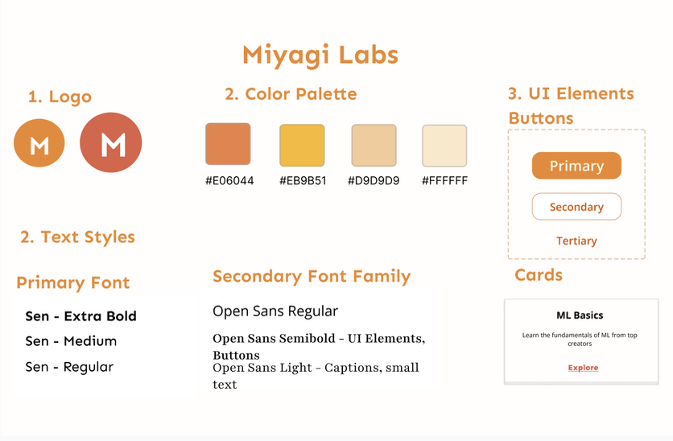
In the design style guide, we included the logo, text font, UI elements and color palette with a varied hue of orange.
The Hi-Fi prototype pages are as follows:
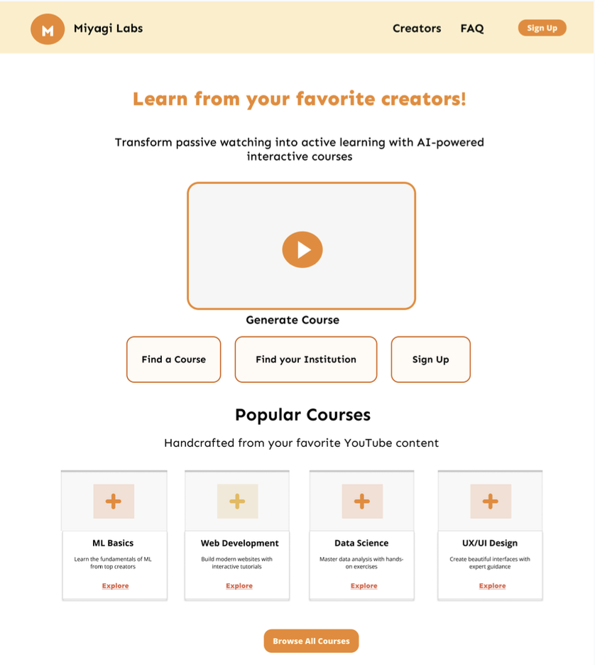
- The home page contains links to the Generate Course page, the Find Courses page, the Sign In page and the Course page.
- It also links to popular courses on the website.
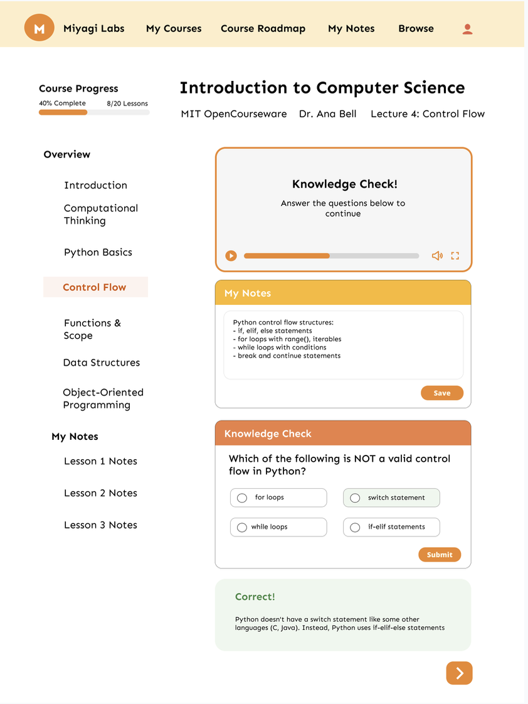
- The Course page lists the course sections and the user's notes in the left bar.
- It displays the course information, the course video, notes and knowledge checks in the body.
- In the top menu bar, this page includes links to the My Notes page, the to-be-completed My Courses page and Roadmap (progress tracker) page.
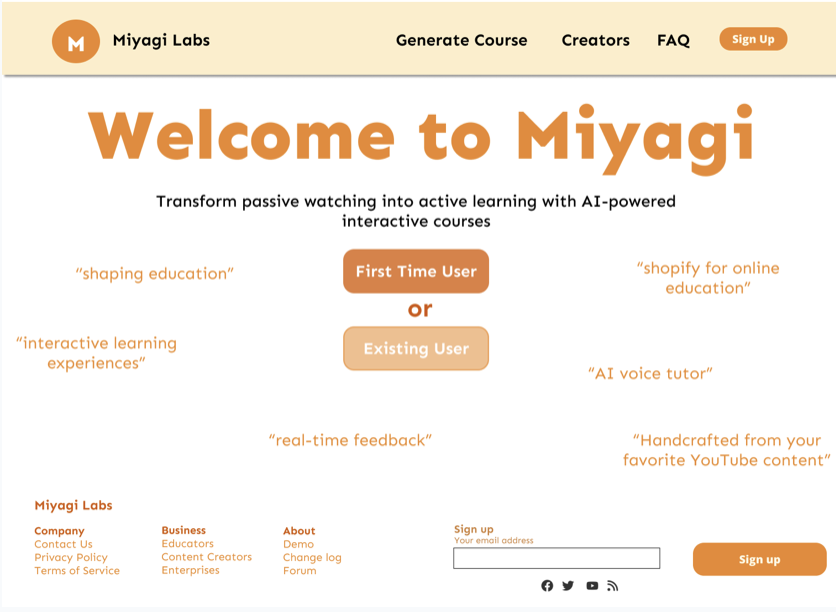
- The log in page provides entrance for both first time users and returning users.
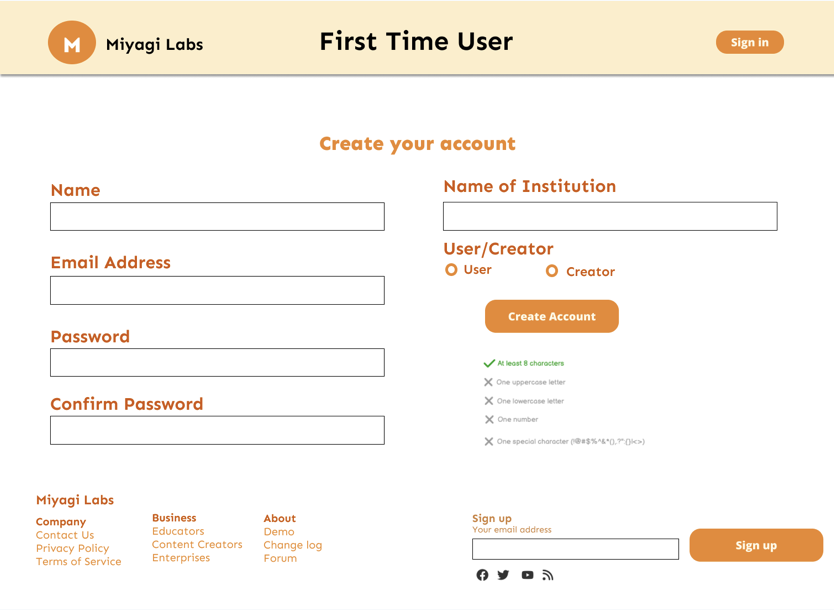
- This page takes the user's name, email address, password, institution and role to create a user account.
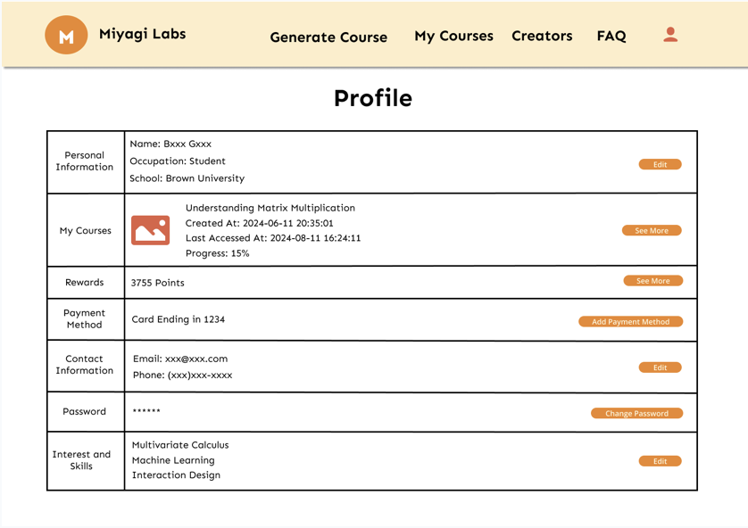
- This page lists the information associated with a user's account and provides links to edit them.
- The top menu bar links to the Generate Course page and the to-be-completed My Courses page and Creators page.
/ul>
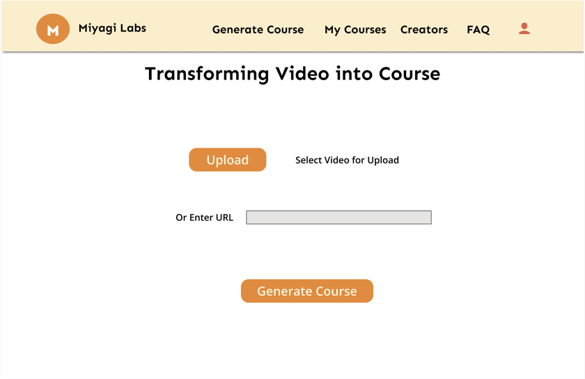
- This page allows the users to upload a video file or enter the URL to a video, such as a Youtube video.
- Clicking on the "Generate Course" button transforms the video into a course.
- The top menu bar links to various other pages.
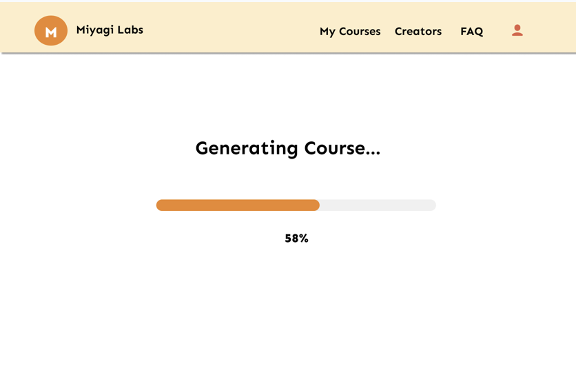
- This page is displayed after the "Generate Course" button is clicked on the Upload Video page.
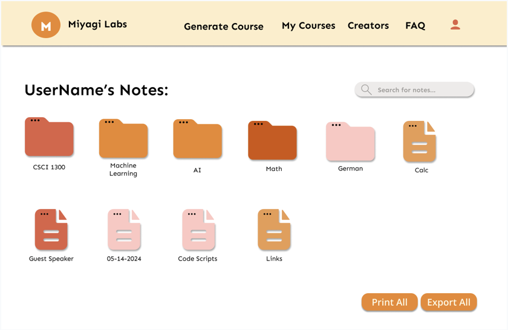
- This page lists all the notes associated with a user's account, either in course folders or as individual files.
- Users can print or export all notes in their notes directory.
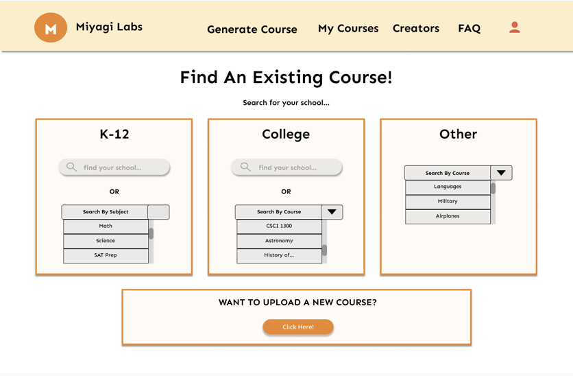
- This page allows the users to search a course by institution or by subject.
- The courses are separated into three categories: K-12, college and other.
- The bottom button links to the Upload Video page.
User Testing 🎥
💡 The Task
We asked users to find and access the My Notes page for a course they're taking. They were encouraged to talk through
their thoughts while using our clickable prototype so we could objectively record any confusion, missed buttons, or
unclear flows.
📝 Testing Instructions
- Start on the homepage and discuss what components on the homepage seem most likely to take you in the direction of My Notes?
- Navigate through the course pages.
- Try using both the navigation bar and buttons on the page and explain why you're selecting the items you are.
- Comment on anything that feels unclear, missing, or surprising.
- Once complete, describe what you think is the most direct way to navigate to the My Notes page.
❓ Questions Asked
- Was the navigation as expected?
- You were on the Profile page multiple times. What were you looking for?
- On a scale of 1-10, how was your experience when trying to view your notes? Why?
- In the My notes section on the current course page, would you have liked to have another option in the notes section aside from the save button?
- Why did it take you a long time before you found the “My Notes” button in the top menu bar?
- Do you think it's helpful to have notes integrated to the lecture sections and view them in a different tab (My Notes)?
👓 Findings
- Most users struggled to find My Notes
- Users stated that button placement was too subtle and options in the top menu bar were confusing as they changed depending on which page user was currently accessing
- Several clicked on items that weren't yet functional
- Users wanted: icons or logos for folders, sorting/filtering, and back buttons
- Everyone liked the idea of a clean, dedicated notes section but with more control and access
🚀 Next Steps
- Add My Notes links in more places (profile, sidebar, course pages)
- Let users sort by date, class, or type of note
- Explore collapsible menus and backwards navigation to make sure all necessary options are accessible via main menu
- Keep header consistent throughout site
Reflection & Insights 💭
Our Miyagi Labs project taught us that effective design requires constant iteration and user feedback. Starting with
wireframes, we refined our design through critique sessions, focusing on learnability, usability, and a consistent
color palette that enhanced brand identity. User testing revealed navigation issues we hadn't anticipated,
particularly with the My Notes feature, demonstrating that real user interaction exposes oversights that
designers miss when familiar with their own systems. This experience reinforced that good design evolves
through multiple refinement cycles and must continuously incorporate user perspectives to truly succeed.